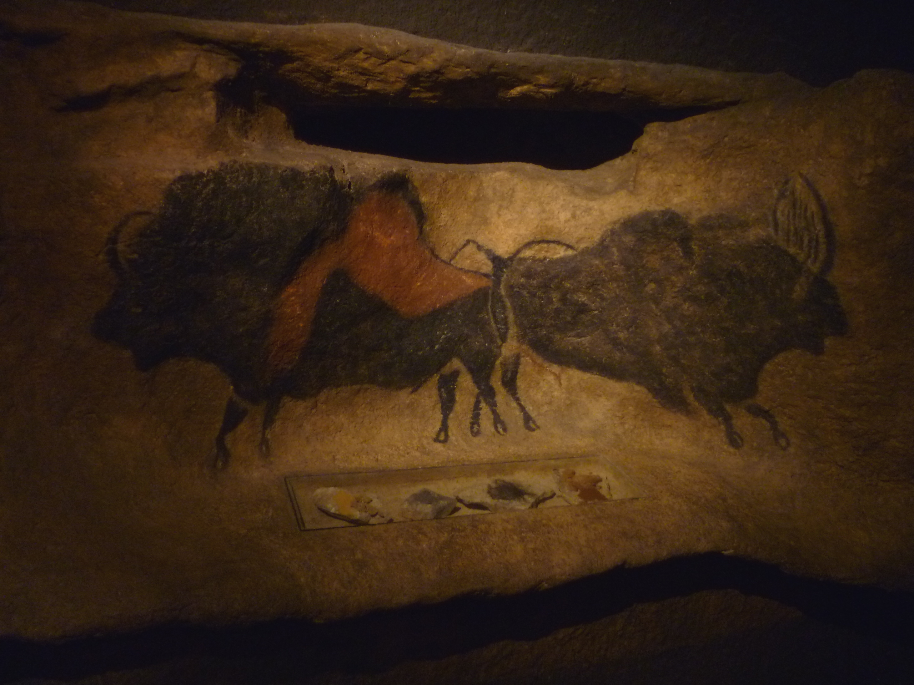
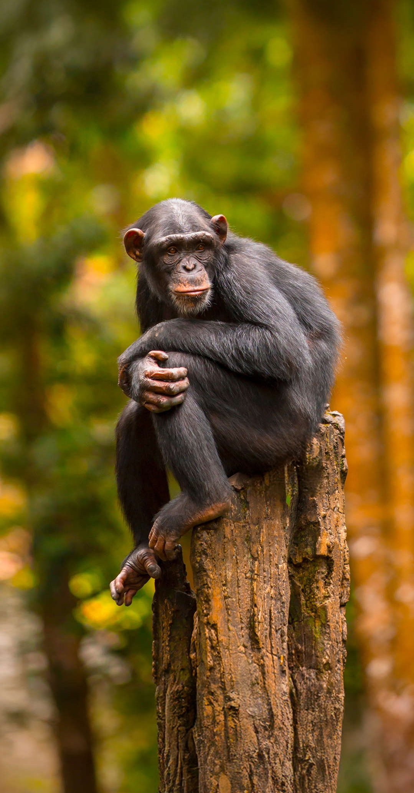
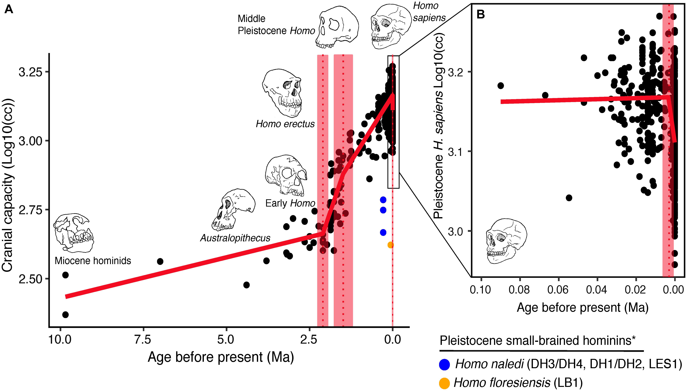
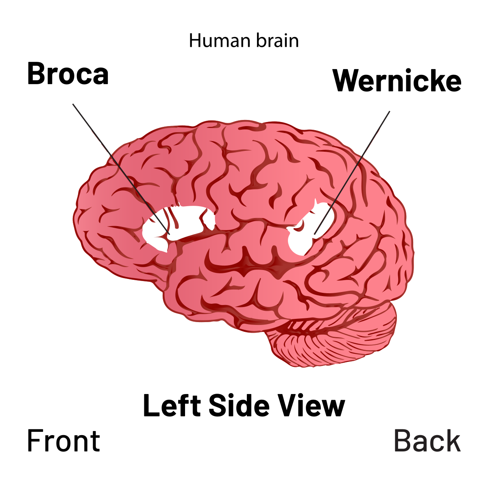
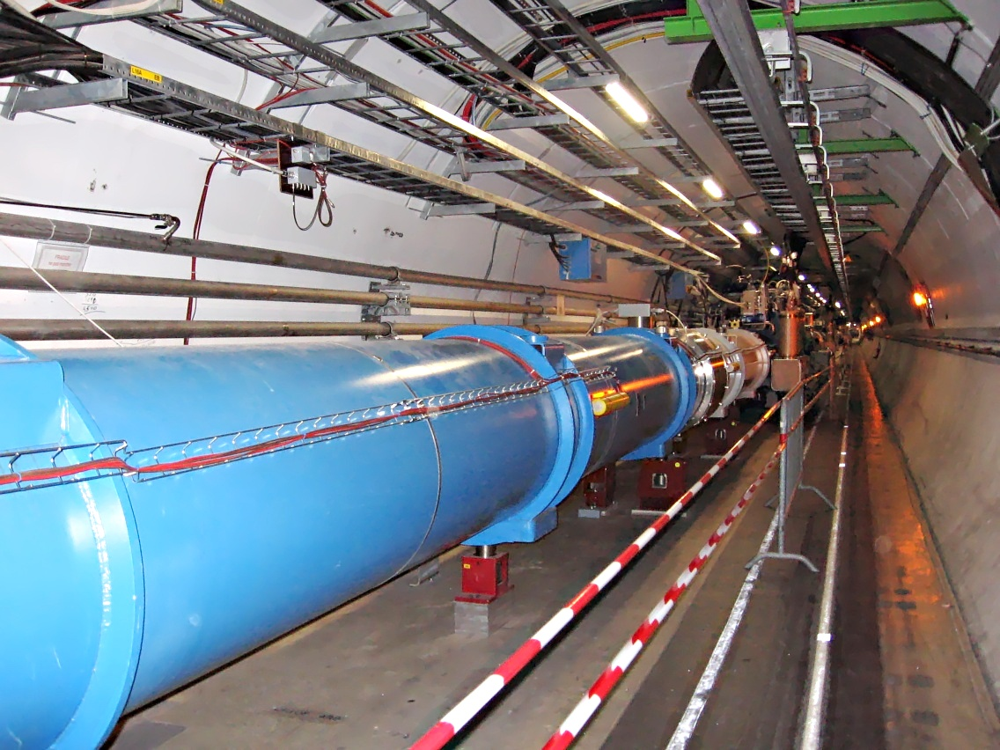

3 Persuasion as a Major Transition in Evolution
This chapter situates persuasion within deep evolutionary history. The capacity to influence the beliefs and actions of others is a biological phenomenon as much as a cognitive or cultural one: the biological record shows it has repeatedly restructured life at the level of the organism, the colony, and the species. The chapter surveys the evidence from eusocial insects, cooperative mammals, and primate societies before turning to human language as the most radical persuasive technology yet evolved.
Somewhere in France, roughly 17,000 years ago, a group of people entered a cave and by torchlight painted the walls with horses, bison, and deer. They mixed pigments, coordinated effort, returned across multiple sessions. Those images are still legible to us today. Anatomically modern Homo sapiens had existed for at least 60,000 years before those paintings appeared, and for most of that time left almost nothing behind. Then, around 40,000 years ago, the record changes: art, burial with grave goods, long-distance trade, explosion of tool types. The question this chapter tries to answer is what changed, and why it took so long.
Language is the obvious candidate, but its role only becomes legible once we understand the problem it solved. That problem is cooperation: how do independent agents, each pursuing its own interests, act as a unit? Evolution has been working on this question for hundreds of millions of years. Bacteria cooperate. Ants cooperate. Chimpanzees cooperate. Each time, the intent is the same: bring other agents to act in ways that serve a shared objective: survival, reproduction, resource acquisition, collective defence. Signals are the mechanism through which that intent is pursued. Non-human species provide the clearest view of what this requires at its most basic level, before language and social convention add layers that can obscure the underlying structure.

The connection between brain evolution and social life sharpens the argument. Dunbar [16] measured the ratio of neocortex volume to total brain volume across 36 primate genera and compared these ratios with typical group sizes for each species. The correlation is r = 0.77: species with proportionally more neocortex live in larger social groups. Since neocortex size varies heritably across primate lineages, this relationship is most naturally read as causal. Species that faced the cognitive demands of managing relationships in larger groups were selected for larger neocortices. The brain appears to have expanded primarily to handle other individuals — the cognitive demands of tools and terrain were secondary.
Applying this regression to humans, Aiello and Dunbar [1] found that our neocortex ratio predicts a social group of roughly 150 people. That figure, now called Dunbar’s number, turns up with notable consistency: in hunter-gatherer band sizes, Neolithic village remains, military company structures, and people’s functional social networks today. Maintaining 150 relationships takes continuous effort. Other primates manage this through physical grooming, which occupies roughly 20 per cent of waking time and proceeds strictly one pair at a time. For a group of 150, the arithmetic breaks down. The waking hours are finite, and grooming is strictly one-on-one. Language fills the gap. Vocal exchange can be directed at several people simultaneously, requires far less time per bond, and happens while doing other things. It scales far beyond what grooming can achieve.
3.1 Persuasion, Communication, and Coordination
Three concepts recur throughout this chapter and are often conflated in ways that obscure the biology.
Persuasion is the intent: the goal of aligning another agent’s beliefs, preferences, or actions with one’s own, or with some shared objective. It is a property of the agent, located in the goal the signal serves. A honeybee performing the waggle dance is engaged in communication as a means to an end: she is trying to recruit foragers to a flower patch. A chimpanzee coalition partner submitting to a dominant male exchanges submission: that is how alliances are secured. The intent to achieve a shared or aligned outcome is what distinguishes persuasion from noise.
Communication is the means by which persuasion is pursued. A pheromone trail, a waggle dance, a dominance display, an argument, a narrative: these are the mechanisms through which one agent attempts to shift the state of another. Communication is in service of persuasion. The signal is the instrument; the alignment it produces is the goal. This ordering matters, because it changes how we ask questions. The question worth asking about any signal is what outcome it was selected to achieve, and how reliably it achieves that. Evolution selects for persuasive outcomes. A signal that produces reliable alignment, even through manipulation or chemical suppression, is as evolutionary successful as one that produces it through accurate information transfer.
Coordination is the result at the group level when persuasion succeeds across multiple agents. Individuals act in ways that are mutually consistent and collectively productive because each has been brought to expect and rely on the behaviour of the others. Coordination is harder than cooperation: it requires shared models of what each party will do, over and above shared goals. Language is what made coordination possible beyond the bounds of direct observation, because language can represent plans, obligations, and the expected behaviour of parties who are absent, distant, or not yet born.
Persuasion is the intent, communication is the mechanism, coordination is the outcome. What this chapter traces is how evolution built progressively more powerful mechanisms for pursuing that intent, from chemical suppression in insect colonies to recursive grammar in human societies, each capable of achieving coordination at a larger scale than the last.
3.2 The Major Transitions Framework
Life has repeatedly solved a particular problem: how to get formerly independent entities to work as a single unit. Each time this happened, evolution created a new level of organisation. Genes that once competed for replication started cooperating inside chromosomes. Cells that once competed for nutrients started cooperating inside bodies. Organisms that once competed for territory started cooperating inside colonies. At every step, the unit of evolutionary competition shifted upward: what was previously the arena of conflict became the platform for a higher-level competitor.
Maynard Smith and Szathmáry [31] catalogued eight of these moments and named them major transitions. Starting from the origin of self-replicating molecules in compartments, the sequence runs through chromosomes, the DNA–protein translation system, eukaryotic cells, multicellular organisms, eusocial insect colonies, and finally human language societies. At each step, formerly competing entities were brought to pursue a shared objective, and each transition required a mechanism capable of achieving that alignment.
The chromosome transition illustrates the problem at its simplest. Early genomes faced a free-rider problem: a gene that replicates faster than its neighbours gains within the genome even if doing so degrades the organism that carries it. The shared objective, organismal survival, was being undermined by within-genome competition. Chromosomes resolved this by physically tying genes to a single centromere, so that every gene replicates exactly once per cell division, no more. The chromosome is a coordination mechanism. By making individual replication impossible, it aligns each gene’s fate with the organism’s fate. The genes cannot pursue separate agendas. Their interests merge with the organism’s.
The DNA–protein system produced a different kind of alignment. Early self-replicating molecules were their own catalysts: the same molecule carried information and performed chemistry. This created a conflict: a molecule optimised for stable information storage is chemically inert, while a molecule optimised for catalysis is reactive and flexible. You cannot fully satisfy both demands in one structure. The transition separated these functions into two molecular classes: DNA for storage, proteins for catalysis. The genetic code, the set of correspondences between nucleotide triplets and amino acids, is the communication channel between them, and it has remained essentially unchanged for three billion years. What the code achieved was alignment between two otherwise separate systems: everything the DNA encodes, the protein machinery executes. Their shared objective is producing a functional organism, and the code is what makes each committed to the other’s output.
The eukaryotic transition is the clearest case of persuasion in the molecular record. About 1.5 billion years ago, a bacterial cell engulfed another bacterium and, rather than digesting it, incorporated it. The inner bacterium, ancestor of the modern mitochondrion, could extract far more energy from oxygen than its host. Over time, most of the mitochondrion’s own genome migrated to the host nucleus, making the partnership structurally irreversible. The chemical signals that originally governed the inner bacterium’s replication cycle became the regulatory signals through which the host nucleus now manages its energy supply. A formerly independent organism was brought to pursue the host’s objective, producing energy on demand, through chemical signalling that progressively eliminated its autonomy. The inner bacterium was absorbed without negotiation — the outcome equivalent to a merger: alignment of behaviour toward a shared objective, sustained by a communication channel that neither party can now abandon.
Queen pheromones in eusocial insect colonies operate on the same logic, on a timescale of weeks rather than billions of years. A honeybee queen produces a blend of fatty acids and aromatics that is distributed through the colony by physical contact and grooming. Workers who receive this signal have their ovarian development chemically suppressed; they forage, build comb, and die at the entrance defending the hive. From the worker’s perspective this looks like a catastrophic sacrifice of individual fitness, and from the gene’s perspective it sometimes is. What makes it stable is the arithmetic of haplodiploidy: workers share three-quarters of their genes with sisters, making the queen’s daughters a more efficient vehicle for a worker’s genes than the worker’s own eggs. The pheromone is a true signal. It says, in chemical terms, that propagation through the queen is arithmetically superior to direct reproduction, and the arithmetic is correct. Workers respond accordingly.
The human language transition followed the same pattern, but the communication system it produced was orders of magnitude more flexible than any of its predecessors. Grooming could maintain alliances in groups of fifty. Alarm calls could coordinate vigilance across a troop. Language made something different possible: the transmission of cooperative obligations across time, across distance, and among individuals who had never met. A promise made today can bind behaviour next month. A reputation built over years in one location travels to the next. A norm that emerged in one generation can be taught explicitly to the next, along with the reasons behind it. The earlier transitions built communication systems; language built a system capable of representing the content of other communication systems, and of revising that content through argument.
Chemical gradients push organelles to differentiate. Queen pheromones sustain reproductive division of labour across fifty thousand individuals. Dominance displays hold competitive relationships in place without constant fighting. Each of these systems is innate and inflexible: the signal triggers a fixed response, and the exchange cannot be renegotiated. Language changed this entirely. The signal became revisable. The response could be argued with. Persuasion capable of representing futures, proposing hypothetical arrangements, and invoking norms not yet present in the immediate environment became possible for the first time.
The framework makes a prediction: each time cooperation scaled up, a new communication technology was its precondition. The rest of this chapter examines those technologies in order of complexity, beginning with the chemical and mechanical signals of insect colonies and ending with the recursive grammar that allowed human societies to reach scales no other primate has approached.
3.3 From Genes to Culture: Bio-cultural Co-evolution
Each of those transitions shared a common feature: the communication system that enabled the transition co-evolved with the biological machinery that executed it. In humans, this co-evolution took an unusual form, one in which culture itself became a selective pressure on the genome.
This account situates the evolution of language within a broader bio-cultural co-evolution. The genetic capacity for language, specialised cortical regions, precise articulatory control, sensitivity to syntactic structure, was shaped by selection pressures that were themselves cultural: the demands of hunting coordination, pantomimic storytelling, and finally conversational argumentation. Each cultural advance in communication created new selection pressure on the biological substrate; each biological advance in communicative capacity opened new cultural possibilities. The result, visible in the archaeological record at 40,000 years ago, was a communication system of unprecedented power, one that could coordinate the construction of hunting parties and shared fictions, institutions, and normative systems.
The mechanism connecting cultural practice to genetic change is sometimes called the Baldwin effect. When a behaviour is culturally learned and repeatedly beneficial, individuals who learn it faster or more reliably have social advantages: they coordinate better, secure more alliance partners, and survive more successfully. Over many generations, this selective advantage favours genetic variants that facilitate the learning. [3, 14] Applied to language: children who could acquire grammar more efficiently were better cooperators, and so better survivors. Over time, the biological machinery for grammar acquisition, the neural architecture of Broca’s and Wernicke’s areas, the sensitivity to phonemic contrasts, the timing of the critical period, became more precisely tuned. The innate grammar-acquisition device was itself shaped by the cultural practice of using language. The boundary between innate and learned dissolves here: the innate is what the learned, repeated over thousands of generations, selected into the genome.
The division of labour between genome and culture follows from this logic. As Tooby and Cosmides [43] argued, the genome may as well store the vocabulary in the “cultural environment”: the words themselves are learned from the surrounding community, acquired culturally rather than encoded in DNA. This is precisely the right division of labour given that cultural evolution is far faster than genetic evolution. The grammar provides a stable generative engine; the vocabulary, which must track cultural innovations such as new tools, new social roles, new institutions, can evolve and diversify at the speed of culture.
The palaeontological record shows exactly when these co-evolutionary pressures produced their decisive outcome. But to understand what language changed, it helps first to see what it replaced: the persuasion machinery that evolution had been building for hundreds of millions of years before any hominin arrived.
3.4 Persuasion in Non-Human Animals
Strip away language, and what you find underneath is chemistry, vibration, touch, and movement. The problem of getting independent organisms to act together has been solved many times over, long before anything recognisable as a mind appeared on earth. Bacteria coordinate through chemical gradients. Slime moulds aggregate when food runs short. The biological record of cooperation runs back further than we can easily imagine, and the machinery it produced is still operating everywhere around us.
What makes other species valuable for understanding persuasion is precisely that they simplify the problem. In humans, every act of influence is buried under language, learned convention, institutional role, and the accumulated etiquette of thousands of years of social life. The underlying structure is nearly impossible to examine directly. A bee colony strips it away. An ant raiding column strips it away. A naked mole rat tunnel does it in mammals. What remains, once the cultural layers are gone, is the biological core: signals that shift behaviour toward a shared objective, simple enough for a biologist to catalogue.
The picture that emerges, across hundreds of millions of years and dozens of independent lineages, is both reassuring and instructive. Reassuring because the cooperation problem, however hard it looks, has proven solvable again and again. Instructive because each solution freezes at a specific point. The waggle dance can specify a location to within three degrees of bearing, but it has no past tense and no future tense. Queen pheromones can suppress ovulation across an entire colony, but they cannot propose an exception. Seeing where each system stops is the most direct route into understanding what language eventually had to become.
3.4.2 Primate Social Persuasion: Grooming, Coalitions, and Politics
Among mammals, the primates provide the richest evidence for sophisticated social persuasion, communication aimed at both coordinating immediate behaviour and managing long-term relationships and social standing.
3.4.2.1 Chimpanzees: The Emergence of Political Persuasion
De Waal’s [45] detailed observations at Arnhem Zoo remain the canonical account of chimpanzee social politics. Male chimpanzees compete for alpha status through a sustained process of coalition building rather than brute force; an outright fight risks injury to both parties. An ambitious male will systematically groom potential allies, sharing food and providing social support in return for backing in future confrontations. The grooming sessions function as negotiations: the sender offers a costly signal (time, grooming effort, food) that communicates commitment and creates a social debt. The receiver is expected to reciprocate support in future conflicts. The channel is tactile (grooming) and gestural; the message is alliance offer; the effect is the creation of a coalition that shifts the balance of power.

De Waal documented that the most successful alpha males at Arnhem were those best at coalition management: grooming many partners, being reliably supportive to allies, and repairing relationships quickly after conflicts. Two males who had fought were often observed, within an hour, presenting themselves to each other for reconciliation. Uninvolved third parties would also approach the loser of a fight and groom or embrace them, a behaviour de Waal interpreted as post-conflict consolation. The consoler needs to recognise the loser’s distress and respond to it, which requires something like empathy, the capacity to model another individual’s emotional state and be moved to act on that model.
Chimpanzees also demonstrate strategic deception, a form of persuasion that involves deliberately misrepresenting information to influence a receiver’s behaviour. Males hide erections when approaching dominant individuals to avoid aggression, and individuals have been observed leading competitors away from food sources they have located, then circling back alone. Byrne and Whiten [8] catalogued dozens of such cases and proposed the “Machiavellian intelligence” hypothesis: that the demands of managing complex social relationships, tracking alliances, reading intentions, deceiving rivals, building coalitions, drove the expansion of primate neocortex. Social intelligence, in this view, is persuasive intelligence.
3.4.2.2 Baboons and Cooperative Sentinels
Baboons (Papio spp.) organise in large troops of 20 to over 100 individuals with multi-level dominance hierarchies that are reproduced daily through communication rather than continuous physical contest. Subordinates signal submission through vocalisation, postural appeasement displays, and grooming directed upward in the hierarchy; dominants signal status through gait, gaze, and priority-of-access behaviours. The social order is reproduced through the ongoing persuasive acts of its participants, maintained through influence as much as force.
The system goes considerably further than status display. Males use specific vocalisations, “grunts” directed at females before approaching them or their infants. The probability that a female will tolerate an approach is measurably higher after such grunts than in their absence, and the effect is stronger for males with a consistent history of non-aggressive behaviour toward that female. This is the full signal-model-decision sequence in operation: the receiver tracks the sender’s past behaviour, updates her model of his intentions, and regulates her response accordingly. [9, 10]
Females also engage in strategic alliance formation across matrilineal kin groups. A female facing a rival will selectively groom a high-ranking male ally in the days preceding likely conflict, then benefit from his proximity during the confrontation itself. The investment in grooming functions as a deposit in a social account, and the subsequent conflict is the withdrawal. Tracking these relationships across dozens of individuals, over weeks and months, requires a social memory that begins to look less like the fixed-response systems of insects and more like genuine political cognition.
Cooperative sentinel behaviour in meerkats (Suricata suricatta), studied extensively by Clutton-Brock and colleagues [11], illustrates how honest alarm signalling can evolve in the absence of close kinship. Sentinel individuals at elevated positions produce graded alarm calls: the call type encodes both the type of predator and the level of urgency, allowing group members to calibrate their response. The sender (sentinel) invests in costly vigilance; the message (alarm call) is graded and specific; the channel is acoustic; the effect is coordinated predator avoidance across the group. The system is maintained by reputation: sentinels who produce false alarms are less likely to receive reciprocal sentinel behaviour from groupmates.
3.4.2.3 Lions: Cooperative Hunting as Persuasion in Action
Lion (Panthera leo) cooperative hunting provides an example in a non-primate predator. Stander [41] documented that lionesses take on specialised roles in group hunts: “wings” flank the prey while “centres” drive it, with the role division emerging from the spatial positions individuals adopt before the hunt begins. The channel is purely visual (positional and postural signals); the message is the individual’s chosen role; the effect is coordinated group action that achieves prey capture beyond the capacity of any individual.
This coordination is accomplished without anything resembling symbolic communication. The information necessary to divide labour and time attacks is transmitted entirely through movement and position in space. The channel and message complexity need not be high to produce sophisticated collective outcomes. What matters is the reliability of the signal-response relationship.

3.4.3 Semantic Signals: The Vervet Monkey
The examples above, chemical trails, waggle dances, alarm calls, cooperative hunts, all involve signals that influence behaviour. But are any of them semantic in the sense that a word is semantic: referring to a specific object or category in the world, independently of the immediate context? This question is sharpest in the case of the East African vervet monkey (Chlorocebus pygerythrus).
Vervets produce three acoustically distinct alarm calls, one for each of their major predators: a call for pythons, a call for martial eagles, and a call for leopards. Each call triggers a predator-appropriate response in listening monkeys. The leopard call causes them to climb higher into a tree (useless against an eagle); the eagle call causes them to look upward and move into dense undergrowth (useless against a leopard); the snake call causes them to stand upright and scan the ground. Each response is calibrated to the specific predator encoded in the call.
One interpretation is that the calls convey only degree of danger, and that the listening monkey looks around, identifies the predator itself, and responds accordingly. Seyfarth, Cheney and Marler [40] ruled out this explanation by playing recorded calls to monkeys in the absence of any actual predator. The monkeys still responded in the predator-appropriate way, climbing, scanning upward, or standing to scan the ground, demonstrating that the call itself drives the response — the predator’s physical presence is irrelevant.
The acid test for semantic representation was a habituation study. If an alarm signal is not followed by an objective threat, animals cease to react to it: they habituate. Vervets have two other calls, wrr and chutter, both used to signal the presence of a neighbouring group of monkeys. If a vervet is habituated to the wrr call, does that habituation transfer to the chutter call? If it does, this means the animal has coded both calls as referring to the same category of event, another group of monkeys, a hallmark of semantic representation.
Habituation does transfer between wrr and chutter, but only when both calls come from the same individual, not from different monkeys. Vervets can identify individuals by voice; what appears to be semantic transfer may partly be individual-recognition transfer. Seyfarth and Cheney concluded that the calls do function as semantic representations, but that the system is entangled with individual identity — a coupling that human language has largely severed.
What, then, are the limits of this system? They are severe, and illuminating by contrast. Vervets do not use calls to refer to objects that are not present: a vervet will not produce the python call to warn a companion about a snake seen yesterday, or at a distant location. The calls are anchored in the here and now; they lack displacement, one of the most important properties that Hockett [27] identified as distinguishing human language from animal communication systems. Vervets also use alarm calls as a means of deception, producing a false call to drive competitors away from a food item, but this deception is conspicuously crude: the deceiving monkey shows no sign of alarm, and bystanders can often see exactly what it is doing. Animals have calls only for objects of immediate biological interest: predators, rivals, food. The vervet call encodes the present threat only: yesterday’s leopard, tomorrow’s eagle, the conditional bargain: all are beyond its reach. A potentially complete representation system, one capable of referring to anything including hypotheticals and abstractions, was the decisive step. That is the step language made. But producing signals that benefit others looks, at first glance, like a losing strategy, which raises the question of why cooperative signalling evolves at all.
3.4.4 The Prisoner’s Dilemma and Why Cooperative Persuasion Evolves
The vervet case raises a theoretical question: why would any individual evolve to produce honest signals that benefit others? If cooperation is individually costly, why does it not collapse under defection? The Prisoner’s Dilemma frames this precisely.
A fundamental theoretical puzzle underlies all the examples above: why would natural selection produce organisms that are persuadable, that respond to the signals of others in ways that may benefit the sender?
The Prisoner’s Dilemma (PD) formalises the problem. Two individuals can each choose to cooperate (C) or defect (D). If both cooperate, each receives a reward R. If one defects while the other cooperates, the defector receives the temptation payoff T (highest), while the cooperator receives the sucker’s payoff S (lowest). If both defect, each receives the punishment payoff P. The payoff ordering T > R > P > S means that regardless of what the other player does, defection yields a higher immediate payoff. In a single interaction, rational actors defect, and cooperation collapses.
The iterated Prisoner’s Dilemma changes this dramatically. When the same individuals interact repeatedly, future payoffs discount the present gain from defection. Axelrod [2] ran computer tournaments in which strategies submitted by game theorists competed in iterated PD. The winner, across two tournaments, was the simplest possible strategy: tit-for-tat. Cooperate on the first move, then do whatever the other player did last round. Tit-for-tat is nice (it never defects first), retaliatory (it punishes defection immediately), forgiving (it returns to cooperation as soon as the other player does), and transparent (the other player can easily learn its rule). These properties, Axelrod showed, are exactly what is needed to sustain cooperation in populations of self-interested agents.
The evolutionary implication is deep: in any species with repeated interactions and the ability to recognise individuals, the incentive structure shifts towards cooperative signalling. Persuasion, the use of signals to alter another’s behaviour in ways that benefit the sender, becomes evolutionarily stable when receiver and sender interact repeatedly, because receivers who respond to honest signals and withdraw from exploitative relationships outcompete those who do not. Nowak [32] synthesised the evolutionary routes to cooperation, kin selection, direct reciprocity, indirect reciprocity, network reciprocity, and group selection, and showed that in each case, the underlying mechanism is a signalling system that makes cooperative intent legible and defection costly.
This is the deep evolutionary reason why the social world is saturated with persuasion: honest communication is a stable equilibrium in populations of agents who interact repeatedly and track reputations. Human language built directly on this foundation.
The logic plays out in ways that are easy to observe. In humans, the split-or-steal format of televised game shows provides a near-ideal natural experiment: two strangers face a single iterated-PD-like choice, with large sums of money at stake, no future interaction, and a live audience. Most players defect. But occasionally a player reframes the game entirely, announcing in advance that they will always steal and then promising to share the winnings afterward, converting a one-shot PD into a credible commitment device and demonstrating, in front of cameras, how reputation and pre-announced strategy can substitute for repeated interaction:
The same dynamic appears in non-human animals, with cooperation maintained through memory and reciprocity. Vampire bats (Desmodus rotundus) return to the roost after nightly foraging and regurgitate blood meals to roostmates who failed to feed, selectively favouring past donors and withholding from past defectors. The relationship is stable because the bats interact nightly and recognise individuals. David Attenborough’s narration of this system in The Trials of Life makes the iterated-PD structure unusually explicit for a wildlife documentary:
Reciprocity, however, requires repeated contact and individual recognition. That leaves open the deeper question: why do organisms produce costly signals at all in the first place, even in contexts where no future interaction is possible?
3.5 Kin Selection and the Logic of Cooperative Persuasion
A worker bee will sting an intruder and die doing it. A meerkat sentinel stands exposed on a rock, calling loudly, making itself conspicuous to exactly the predators it is warning others about. A Belding’s ground squirrel produces a loud alarm call when it spots a hawk, drawing the predator’s attention to itself. These are costly acts that benefit the group at the individual’s expense. The answer begins with genetics. Hamilton [24] showed that altruistic behaviour can evolve when the recipient is a sufficiently close relative, formalised as Hamilton’s rule: rb > c, where r is genetic relatedness, b is the benefit to the recipient, and c is the cost to the actor. This elegant inequality, derived across two landmark 1964 papers, unified the previously puzzling phenomena of worker sterility, altruistic alarm calls, and cooperative breeding under a single quantitative framework.
In Hymenoptera (bees, ants, wasps), haplodiploidy, the mechanism by which females develop from fertilised eggs and males from unfertilised ones, means that full sisters share three-quarters of their genes (r = 0.75), a relatedness higher than that between a mother and her offspring (r = 0.5) [44]. The arithmetic here is worth pausing on. A worker bee who sacrifices reproduction helps raise sisters who share 75% of her genes. The inclusive fitness gain, the benefit to shared genes flowing through those sisters, can easily exceed the direct fitness cost of forgoing personal reproduction. This is why worker sterility evolves readily in Hymenoptera and not in diploid species: the haplodiploidy coefficient r = 0.75 for sisters is higher than the r = 0.5 for siblings in diploid organisms, and Hamilton’s rule requires rb > c. Higher r makes the left-hand side larger, more than enough to outweigh the cost of sterility.
This connection between kinship and cooperability extends beyond arithmetic: it suggests that the trustworthiness of a persuasive signal, the probability that a receiver will act on it, is itself subject to evolutionary selection. Signalling systems evolve towards honesty when sender and receiver interests are sufficiently aligned, and towards manipulation when they diverge. Krebs and Dawkins [29] articulated this as the deep tension underlying all animal communication: signals that reliably benefit both parties are maintained by selection; signals that exploit receivers at their expense drive counter-adaptation. The evolutionary tension between honest persuasion and deceptive manipulation is the most ancient form of the propaganda arms race.
3.6 Costly Signals: Why Honest Communication Persists
The problem with honesty, from an evolutionary standpoint, is that it is always vulnerable to cheating. If a signal of high quality can be faked by a low-quality sender, selection favours fakers and the signal loses its informativeness. So why does honest communication persist at all?
Zahavi [47] provided the answer: signals that impose a genuine cost on the sender cannot be cheaply faked. A peacock’s tail is expensive to grow, metabolically costly to carry, and makes the bird more visible to predators. A weak peacock that grew such a tail would pay the cost without the fitness benefits that a strong peacock enjoys. The tail is informative precisely because it is burdensome, its very extravagance the guarantee of its honesty. Zahavi called this the handicap principle [48].
The principle extends well beyond feathers. Male deer fight with antlers that are costly in bone, time, and injury risk. Bowerbirds construct elaborate structures that signal building ability and aesthetic sense. Meerkats stand on exposed rocks and call loudly, advertising their sentinel role at personal risk. In each case, the signal is credible because a low-quality individual cannot afford it: the cost enforces honesty.
Human persuasion inherits this logic directly. A speaker who travels far to deliver a message signals commitment. An orator who publicly stakes a prediction signals confidence. A leader who accepts costly obligations, redistributing food, taking on dangerous tasks, absorbing the first risks of collective action, signals alignment of interest with followers. In political science this surfaces as the costly commitment literature; in economics as signalling games. The underlying biology is the same across every domain: costly acts are credible precisely because they are costly.
Reputational commitment extends this further. Publicly announced promises are hard to break without social cost; the public nature of the promise is itself the enforcement mechanism. Much of what we call rhetoric, the choice of a bold claim, the decision to speak on record rather than off, is the deployment of costly signals in the reputational domain.
3.7 The Arms Race: Honest Signals and Their Mimics
Zahavi’s handicap principle predicts honesty. But it predicts something else too: mimicry. Wherever an honest signal becomes reliably responded to, a selection pressure arises for cheap imitations, signals that mimic honesty rather than instantiating it. Krebs and Dawkins [29] named this the manipulation side of the evolutionary tension. Every signal system, given time, generates an arms race between honest senders and deceptive imitators, and between credulous receivers and skeptical ones.
The evidence is everywhere in nature. Orchids that mimic the appearance and scent of female wasps deceive male wasps into pseudocopulation, achieving pollination without offering any reward. Cuckoos produce eggs that mimic the host’s eggs closely enough to evade rejection. Firefly species Photuris females mimic the flashing patterns of other firefly species to lure and eat males who mistake them for mates. In each case, receivers eventually evolve counter-adaptations: finer discrimination, subtler recognition criteria, resistance to the previously exploited signal.
The arms race between sender manipulation and receiver resistance is the deepest structural feature of communication, older than nervous systems. It predicts something that will become central to the rest of this book: that persuasion and resistance to persuasion co-evolve. Every technique of influence that becomes widely deployed generates, over time, corresponding immunities. The history of mass media is one version of this cycle: from print propaganda to the media literacy it eventually prompted; from television advertising to commercial skepticism; from email spam to spam filters. What changes with AI-generated persuasion is the speed at which new sender strategies can be deployed, potentially outrunning the evolutionary pace at which receiver resistance develops. That asymmetry is examined in Chapter 7.
Hamilton’s rule explains cooperation within kin. Costly signalling explains cooperation among non-kin who can observe each other’s costly acts. Neither reaches the scale of modern human societies. Something else is needed, something that allows cooperation among complete strangers, across time, at continental scale. That gap is where the human record begins.
3.8 The Human Evolutionary Record
To understand language as a genuine major transition, it helps to ground the argument in the palaeontological record. The timeline below reveals a puzzle: the extraordinary delay between the appearance of our lineage and the appearance of our culture [31].
| Period | Species | Brain size | Key marker |
|---|---|---|---|
| 4 Mya | Australopithecines | ~1/3 modern | Upright posture; ape-sized brains |
| 1.5 Mya | Homo erectus | Brain doubled | Hand axe — unchanged for 1 million years |
| 250 kya | Earliest H. sapiens | Near-modern | Slightly more skilled toolmaking |
| 100 kya | Fully modern H. sapiens | Modern | Fully modern large-brained humans, tools still conservative |
| 40 kya | H. sapiens | Modern | Burst of innovation: cave paintings, burials, trade |

At 4 million years ago, the australopithecines walked upright but their brains were ape-sized, roughly one-third the volume of a modern human brain. By 1.5 million years ago, Homo erectus had appeared with a brain that had doubled, and was carrying a remarkable stone tool: the hand axe. What astonishes is the hand axe’s extraordinary stability. Virtually identical specimens have been found across Africa, Europe, and Asia, manufactured to the same specification for approximately one million years and across many thousands of generations [31]. Cultural transmission was clearly operating: the design was copied faithfully, but it was copying without cumulative improvement. This is culture, but not yet cumulative culture.
By 250,000 years ago the earliest Homo sapiens were present, with slightly more skilled toolmaking. By 100,000 years ago, fully modern large-brained humans were widespread, yet their tools remained broadly conservative. Then at 40,000 years ago there was a burst of innovation. Cave paintings appeared; the dead were buried with grave goods; shell ornaments were traded across hundreds of kilometres; tool types proliferated rapidly. Language is the obvious candidate for what changed. Only a communication system capable of displacement, of referring to the absent, the past, the hypothetical, could underpin simultaneous innovation in art, ritual, and long-distance trade, all of which require coordination around shared representations that do not exist in the immediate environment.
3.8.2 Pantomime Predating Verbal Language
The sequence reconstructed by Számadó places gestural and pantomimic communication before verbal language in evolutionary time. Ferretti and Adornetti [18] develop this argument in detail: archaic hominins employed pantomime as a primary persuasive medium, a nonverbal, mimetic, non-conventionalized form of communication that represented events and stories through coordinated body movement and relied on shared mental imagery. Unlike the limited gestural repertoires of other apes, pantomime is inherently narrative: it can depict an absent entity, a sequence of events, a causal chain. Experimental evidence shows that gesture dominated over vocalization in early human communicative acts, and that gesture has significantly greater potential than vocalisation for bootstrapping a shared communicative system from scratch.
The reason gesture comes first is straightforward: mimicry of visible actions is simpler than arbitrary acoustic symbols. You can mime a running antelope with your hands; you cannot easily vocalise it without prior convention. Gesture is transparent to the receiver in a way that sound is not, because the form of the gesture shares properties with what it depicts. A plausible neural substrate for this is the mirror neuron system, first characterised in macaques: cells in the premotor cortex that fire both when an action is performed and when it is observed in another individual. [34] Because gesture is visible and imitable, and because the same neural circuits are activated both in producing and perceiving an action, gesture would naturally be the first medium for communication about the actions of agents. Sound became the dominant channel later, once the conventions were established, because of its advantages in range, darkness, and multitasking.
The emergence of conversational language built on this gestural base, adding the dimension that pantomime alone cannot achieve: turn-taking argumentation.
3.8.3 Conversational Language as Reciprocal Persuasion
Ferretti and Adornetti [18] locate the distinguishing feature of modern Homo sapiens in conversation: the turn-taking exchange in which both parties alternately produce and respond to communicative acts, each trying to shift the other’s beliefs or actions. Conversation is a negotiation, a reciprocal exchange in which each move shapes the next.
What makes conversation cognitively special is turn-taking itself. Each speaker must model what the other person understood from the previous turn and respond to that model, to what was registered rather than simply to what was said. This demands theory of mind operating in real time: I need to track your current mental state alongside my own intention as I produce the next utterance. Pantomime, however elaborate, does not require this because there is no conversational floor to manage, no obligation to respond to the other’s interpretation rather than repeating one’s own display.
Conversation, on this account, was the evolutionary trigger for grammar. The demands of reciprocal persuasion, composing novel arguments in real time, responding to objections, specifying precisely which object or action or time-point is at issue, required a combinatorial system capable of generating an unbounded number of distinct messages from a finite vocabulary. Consider what is needed to say “if you bring the spears to the ridge, I will drive the prey toward you from the south.” That sentence requires tense, conditionals, reference to locations currently out of sight, and subject-predicate structure linking specific agents to specific roles. Simple declaratives and requests, the kind pantomime can approximate, fall short of what coordinated argument requires. The pressures driving grammar were argumentative: exchanging reasons, proposing and rejecting plans, negotiating roles and obligations in real time.
Through this process, human communication became multimodal: integrating both speech and gesture as complementary channels. Speech took on the primary grammatical burden, the combinatorial, recursive system for specifying relations among arguments, while gesture retained its role in grounding reference, expressing emphasis, and conveying spatial and iconic information that resists easy encoding in syntax. The result is a hybrid system in which the full meaning of an utterance is often distributed across both channels, but whose core propositional structure is carried by the spoken word.
The genetic architecture that makes all this possible co-evolved gradually with the cultural practices it enabled. The question that remains is what this co-evolved system could do that no prior communication system could, and why that difference matters so much for cooperation.
3.9 Language: The Human Major Transition
The communication systems surveyed so far, chemical gradients, waggle dances, alarm calls, and coalition politics, share a fundamental constraint. They all operate in the present. A vervet alarm call signals a leopard here and now. A grooming session cements an alliance with the individual directly in front of you. Pheromone trails point to food that currently exists. No signal in any of these systems can refer to what happened yesterday, what might happen tomorrow, or what would have happened if someone had behaved differently.
Language broke that constraint. It differs from every prior communication system in kind, through three properties absent in all animal communication [27]:
- Combinatorial productivity: a finite set of phonemes combines into an unbounded number of morphemes, which combine into an unbounded number of sentences, each capable of expressing a distinct meaning.
- Displacement: language can refer to entities and events that are not present in the immediate environment, including objects in the past or future, distant locations, and purely hypothetical situations.
- Propositional structure: language encodes both the identity of referents and the relations between them — causal, conditional, and normative relations.
These properties together mean that language can coordinate behaviour around representations of the world, including representations of social rules, obligations, and sanctions, rather than around present stimuli alone. A honeybee’s waggle dance communicates the location of a food source with extraordinary precision, but it cannot communicate that a certain flower patch is morally off-limits, or that a nestmate who visited it owes an apology. Language can. This is what makes language the pivot of this book: every mechanism of persuasion examined in the chapters that follow, attitude change, framing, narrative, political rhetoric, AI-generated content, operates through it. Without displacement, without propositional structure, without the ability to say if you do this I will do that or they did something terrible last year, none of those mechanisms exist. Persuasion at the scale that humans practise it may be the primary reason language evolved.
That connection runs in both directions. Language made large-scale persuasion possible; the selection pressure for large-scale cooperation made language evolutionarily advantageous. The two drove each other. The following sections trace how, starting with the social scaling problem language solved and ending with the way cultural transmission turned language into a system capable of persuading entire civilisations.
3.9.2 Language and Thought: Distinct Systems
If language evolved primarily for persuasion rather than reasoning, we should expect language and thought to be partially separable, distinct systems with distinct evolutionary histories that happen to interact. The evidence bears this out. A persistent misconception treats the two as the same thing, as if thinking were simply internal speech. Language and thought are biologically distinct systems, and this distinction matters profoundly for understanding what language does as a persuasive technology. Fedorenko, Piantadosi and Gibson [17] review the full body of evidence and conclude that language is primarily a communicative technology — a tool for coordinating minds, with reasoning running on largely separate, dissociated circuits.
The clearest evidence comes from patients with severe aphasia, the selective loss of language following damage to the left hemisphere’s language areas. Such patients may lose virtually all ability to produce or comprehend speech, yet retain the ability to perform arithmetic, solve spatial puzzles, follow complex non-verbal instructions, and reason causally about the world. The language system, even when catastrophically damaged, does not take reasoning down with it.
The complementary pattern is equally informative. Certain forms of frontal lobe damage or thought disorder leave linguistic fluency intact, the patient producing grammatical, well-formed sentences, while producing severe impairments in decision-making, planning, and logical inference. A person can speak perfectly and reason very poorly. Together, these two patterns constitute a double dissociation: each system can be selectively damaged while the other is preserved, which is the strongest evidence that they are anatomically and computationally distinct.
The structure of language itself reinforces this conclusion. If language had evolved primarily as a tool for thinking, we would expect it to be optimised for the demands of reasoning: precision, unambiguity, completeness. Instead, the statistical structure of every known human language reflects the pressures of communication between a sender and a receiver [17]. Across languages, the most frequently used words are the shortest: word length is predicted more strongly by contextual predictability than by meaning complexity. Grammatically related elements cluster together within sentences, reducing the listener’s memory load; analyses of large corpora show that actual sentences are consistently shorter in dependency length than random arrangements of the same words would be. And languages tolerate, even exploit, ambiguity: in predictable contexts a shorter ambiguous expression transmits the same information as a longer unambiguous one. Private reasoning, which has no receiver, would gain nothing from ambiguity. Language’s tolerance of it is a signature of its communicative function.
Developmental evidence runs in the same direction. Prelinguistic infants track object permanence, attribute intentions to agents, and compute causal chains before they have the syntactic or lexical resources to describe any of this. Going the other way, children acquire grammatical patterns in domains where their conceptual understanding lags, producing passive constructions or embedded clauses in contexts where they do not fully grasp the logical relationship being expressed. The two systems develop on their own schedules, consistent with distinct biological programmes.
Language enables the persuasive achievements described in the remaining sections of this chapter: shared fictions, institutions, normative systems. The mechanism is transmissive: language carries representations between minds, aligning the mental states of distinct agents. Persuasion via language is other-directed — a technology for coordination across individuals, across time.
3.9.3 From Signals to Recursion: The Hierarchy of Linguistic Capacity
Language emerged piecemeal: a hierarchy of increasing computational power, each level enabling communicative and cognitive capacities inaccessible to the level below it. Mapping this hierarchy clarifies what is shared between humans and other animals, what is uniquely human, and why the uniquely human components were the decisive step for cooperation at scale.
Level 1 — Signals. The most primitive communicative acts are signals: outputs that reliably trigger specific responses in receivers, with the signal-response relationship fixed by biology. The vervet alarm calls (Section 3.4.3) are paradigm cases: three acoustically distinct calls, each eliciting a predator-appropriate flight response, each biologically specified. The honeybee’s waggle dance encodes direction and distance to food with extraordinary precision. Meerkat sentinel calls grade continuously with threat level. In each case, the signal is tied to an immediate, perceptible state of the world: a real predator, a real food source, a real threat. What signals enable: rapid, reliable coordination of behaviour around present stimuli. What they cannot do: refer to the absent, the categorical, or the arbitrary. There is no vervet signal for yesterday’s python.
Level 2 — Symbols. A symbol is an arbitrary sign-referent relationship: the acoustic or gestural form of the symbol bears no iconic resemblance to what it refers to. The English word cat sounds nothing like a cat; the word red is not itself red; the sign for apple in American Sign Language does not look like an apple. This arbitrariness is the crucial enabling property. A signal system tied to iconic or indexical resemblance can only refer to things that can be imitated or pointed at. An arbitrary symbol can refer to anything, including things that cannot be perceived, imitated, or pointed at: obligations, possibilities, mathematical objects, the future. Washoe’s acquisition of arbitrary ASL signs demonstrates that the symbol-forming capacity extends to other species: trained apes can acquire a limited set. What symbols enable: naming, the assignment of a stable label to a category that can then be communicated across individuals and across time.
Level 3 — Vocabulary expansion. Once the symbol principle is established, the vocabulary can grow without limit. Each new word extends the referential scope of the system without requiring new signal infrastructure. Vocabulary can track cultural innovation: new concepts get new names (algorithm, democracy, copyright), and those names can spread through a community within a generation, far faster than any genetic process. This is why Tooby and Cosmides [43] argued that the genome stores the capacity to learn words rather than the words themselves: cultural evolution generates vocabulary faster than genetic evolution ever could. What vocabulary expansion enables: the categorical mapping of the world, including the shared conceptual maps that underlie coordinated action among strangers who have never met.
Level 4 — Simple combinations. Placing two symbols in relation (big train, tickle Washoe, my milk) produces a qualitatively richer output than either symbol alone. The combination encodes a proposition: an assertion about how two entities stand in relation to one another. This is the level at which the two-word child, the language-trained chimpanzee, and Genie all operate (see Section 3.9.6). The semantic territory covered by two-word combinations is already substantial: attribution of properties (red book), possession (my milk), location (walk street), agent-patient relations (Adam checker). What combinations enable: propositional content, the expression of states of affairs rather than the naming of objects alone. What they cannot express: the difference between the dog bit the man and the man bit the dog, because at this level word-order rules are absent or inconsistent, and embedding is impossible.
Level 5 — Syntax. Syntax is the system of rules that governs how symbols can be combined: which structural roles they can play, in which order, with which agreement relations. The decisive syntactic innovation, present in all known human languages and absent in all animal communication systems, is the subject-predicate distinction (see Section 3.9.4): the separation of the argument slot (what is being talked about) from the predicate slot (what is being said about it). This allows a vocabulary of N nouns and M verbs to generate N × M distinct propositions rather than N + M distinct signals. The expressive capacity grows multiplicatively rather than additively. What syntax enables: unbounded messages from finite means, the ability to say, and understand, sentences never before uttered.
Level 6 — Recursion. Recursion is the embedding of one linguistic structure inside another of the same type, without principled limit. A sentence can contain a relative clause that contains another relative clause: the dog that the man who the woman hit saw ran. A verb of mental state can take a propositional complement that contains another propositional complement: She knew that he believed that they had agreed to leave. Conditional and counterfactual reasoning is structured recursively: if he had known that she would have done what she said she would never do, he would not have…. Recursion is what allows language to represent thoughts about thoughts, the basis of full-blown theory of mind: knowing what they believe someone else believes about what you believe.
[26]
What recursion enables: the entire domain of embedded social reasoning, the contractual, legal, narrative, and moral reasoning that human cooperation depends on. A contract (“if you do X, I will do Y, unless Z obtains, in which case…”) is a recursively embedded conditional. A legal argument is a chain of recursively embedded propositions about what others did, intended, agreed to, and were permitted to do. A novel embeds one character’s consciousness inside another’s, nested within a narrator’s, nested within the author’s representation of a world that never existed. None of this is possible without recursion.
Level 7 — Abstract reference and displacement. The final level is the capacity to refer to entities and events that are not present in the immediate perceptual environment, and beyond that to entities that may not exist at all. Displacement [27] is the ability to speak of the past and future, of distant locations, of hypotheticals and counterfactuals. Abstract reference extends this to entities that have no spatiotemporal location whatsoever: obligations, rights, probabilities, mathematical objects, moral duties, social roles. A corporation is not a physical object; democracy is not a perceptual category; justice does not exist at any particular location. Yet these abstractions coordinate the behaviour of millions of people who have never met.
What abstract reference enables is precisely the institutional infrastructure that distinguishes human civilisation from the cooperation of every other species: laws, markets, religions, scientific communities, states. Every one of these institutions is, in the analysis of Section 3.9.9, a shared fiction, a collectively held representation of something that has no physical existence but that generates real coordination through belief. The capacity to represent and communicate about non-present, non-perceptible, non-existent entities is the communicative foundation of everything that makes human social organisation unique.
The hierarchy as an evolutionary ladder. The levels are descriptive categories, but they also map onto distinct evolutionary and developmental stages. Animal communication systems generally reach Level 2 (symbols, in trained apes) or remain at Level 1. Proto-language, in the two-year-old child, the trained ape, and the language-deprived human like Genie, operates at Levels 2–4. Full human language achieves Levels 5–7. The transitions between levels are sharp thresholds: each requires qualitatively new neural architecture. It is the jump from Level 4 to Level 5, from combination to syntax, that constitutes the major transition in human evolution, and it is Levels 6 and 7 that make human persuasion qualitatively unlike anything seen elsewhere in the animal kingdom.
| Level | Capacity | Example | What it enables |
|---|---|---|---|
| 1 | Signals | Vervet alarm calls | Immediate behavioural coordination |
| 2 | Symbols | Washoe’s ASL signs | Naming arbitrary categories |
| 3 | Vocabulary expansion | Cultural words (algorithm) | Tracking cultural innovation |
| 4 | Simple combinations | Big train; Tickle Washoe | Propositional content |
| 5 | Syntax | Subject-predicate structure | Unbounded messages from finite vocabulary |
| 6 | Recursion | She knew that he believed that… | Theory of mind; contracts; narrative |
| 7 | Abstract reference | Obligations, rights, justice | Institutions; law; shared fictions |
3.9.4 Grammar, Syntax, and Semantics
The most fundamental structural feature of human language, one that has no counterpart in any animal communication system, is the subject-predicate distinction. Consider four concepts: dog-running, dog-sleeping, lion-running, lion-sleeping. A system without grammar would need a separate signal for each of these four combinations. Human language does something more powerful: it provides two nouns (dog, lion) and two verbs (run, sleep), and allows any noun to be combined with any predicate. To say “the dog is sleeping” is a predication, an assertion that a property holds of an entity. Since many properties can be predicated of each entity, and many entities can be referred to by each noun, the range of things that can be communicated with a vocabulary of a given size grows multiplicatively rather than additively. The subject-predicate distinction is a universal feature of all known human languages, and it is the basis of our ability to produce and understand an indefinitely large number of sentences from a finite vocabulary. A vervet monkey cannot do this: its alarm calls form a closed inventory, each signal tied to one meaning.
Why is only the capacity to learn language innate, and not the vocabulary itself? If language were adaptive, would it not be more efficient to transmit the vocabulary genetically, rather than requiring each child to learn it from scratch? Tooby and Cosmides [43] offer a compelling answer: if the vocabulary is learned, we can acquire names for cultural innovations: screwdriver, constitution, algorithm. Cultural evolution is far faster than genetic evolution; long before any appreciable number of words could be genetically assimilated, dialects and distinct languages were already present and diverging. The genome may as well store the vocabulary in the “cultural environment”, meaning that the capacity to learn words is heritable, while the words themselves are maintained and transmitted culturally. This is a precise instance of the bio-cultural co-evolution described in Section 3.9.8: the biological endowment creates the receptacle; the cultural environment fills it.
The innateness of grammar’s deep structure presents a different puzzle. The surface rules of different languages vary enormously, but their deep structural properties, subject-predicate organisation, recursive embedding, and argument structure, are universal. If these structural principles cannot be learned from the input (bottom-up), nor derived from general reasoning principles (top-down), their existence requires explanation. As Bates and colleagues argued, there are logically only two possibilities: either universal grammar was installed directly by the Creator, or our species underwent a cognitive mutation of unprecedented magnitude, a Big Bang of the language faculty.
[4]
Any evolutionary biologist will recognise the problem here. We have been told too often that the eye could not have evolved by natural selection, because any alteration to its structure would destroy its function. Yet we know of many functional intermediates between a simple pigment spot and the vertebrate eye, each fully adequate for the organism’s needs at that stage. Complex organs are built incrementally, each stage functional in its own right. The question for language is whether comparable intermediates can be identified. The snag is that the intermediates no longer exist, unlike the eye, for which we have living comparative examples across phyla. But the evidence from cases of partial linguistic capacity, specific language impairment, aphasia, sign languages at different stages of grammaticalisation, suggests that grammatical competence is a matter of degree: partial grammar exists, and partial grammar is far better than none.
3.9.5 Language in the Brain: Genetic and Lesion Evidence
The neurological evidence for language as a biologically specific faculty, distinct from general cognitive capacity applied to communication, comes from two sources: cases of selective brain damage and cases of selective genetic impairment.

Patients with damage to the temporal segment of the left lingual gyrus suffer from colour anomia. They experience colour normally and are in full command of word morphology, they can produce and comprehend sentences, but they are unable to pair colour names with colours: they may pair yellow with grass and green with banana. Given a colour name, they point to the wrong colour. The link between word and concept is selectively impaired. Patients with damage to the anterior and mid-temporal cortices recognise objects correctly but cannot name them; they say, “I know it, but I cannot say the name.” Oddly, this naming difficulty is more pronounced for natural objects than for human-made artefacts, suggesting that different parts of the brain represent categories of objects differently. Damage to the left anterior temporal lobe can selectively impair the ability to retrieve the names of unique persons, while leaving common-noun retrieval intact. Each of these dissociations reveals a distinct sub-component of the language system, a modularity within language itself that is anatomically grounded.
[13]
The biological specificity of language is shown most directly by a British family studied by Gopnik [22]. Across three generations, 16 of 30 family members were affected by a peculiar language disorder (dysphasia). The pattern of inheritance, affecting some members of a sibship while sparing others, is consistent with a single dominant autosomal gene. The disorder is not due to imitation of a disordered parent: children affected while one parent is normal still show the impairment. These individuals are not globally impaired: they tell jokes, converse, and some are mathematically capable. There is no general failure to handle hierarchical structures. The impairment is specific to one aspect of morphology: the affected individuals cannot generalise grammatical rules.
The nature of the deficit is beautifully illustrated by Gopnik’s examples. Affected children write sentences such as:
She remembered when she hurts herself the other day. Carol is cry in the church. On Saturday I went to nanny house with nanny and Carol.
In each case the child fails to mark tense or possession using the appropriate morphological change: hurt should be hurt (past), cry should be crying, nanny house should be nanny’s. When shown a picture of an imaginary creature called a wug and then a picture of several such creatures, a normal child immediately says wugs. The dysphasic child cannot: they can learn individual examples of plurals and past tenses, just as we all learn that the past of go is went, but they cannot generalise the rule to new cases. Grammar, for them, is a collection of memorised facts rather than a productive system.
One child demonstrated this precisely. On a Monday she wrote: On Saturday I watch TV. Her teacher corrected this to watched. The following week she wrote: On Saturday I wash myself and I watched TV and I went to bed. She had learned that the past of watch is watched as a particular fact; she had not extended the rule to wash; and she already knew went as a unique memorised form. The productive morphological rule, the ability to generalise, is the specific thing that is missing.
This case carries several implications for understanding what language is. First, it shows that there can be intermediates between perfect linguistic competence and none: these individuals have substantial language, just not generative morphology. This is evidence against the “all-or-nothing” view of language evolution, and for the possibility that the faculty evolved incrementally. Second, the impairment is specific to language, with no general cognitive defect, suggesting that at least some grammatical knowledge is instantiated in neural structures that are biologically dedicated to language rather than shared with domain-general reasoning.
Subsequent molecular research identified a gene, FOXP2, a transcription factor that regulates neural development, as implicated in heritable language disorder. The human version of FOXP2 differs from the chimpanzee version by two amino acid substitutions that appear to have arisen recently in our evolutionary history, and disruption of this gene produces impairments specifically in the sequencing and articulation of speech. It is one of the first concrete links identified between a specific genetic variant and a specific component of the human language faculty.
3.9.6 Proto-language: Apes, Children, and Genie
The best way to understand what is distinctive about full human language is to examine what precedes it, what we can call proto-language: a communication system that conveys meanings but lacks the productive grammar that makes human language unbounded. The concept is brought into sharp focus by comparing two sets of two-word utterances from very different sources.
(12) Big train; Red book; Adam checker; Mommy lunch; Walk street; Go store; My milk; Pretty boat; Mama honey; Pig Mommy.
(13) Tickle Washoe; Open blanket; Roger ticket; You drink; Go in; In hat; Clothes Mrs. Gardner; Listen dog; Sign me; Hurry gimme.
These two sets are close to indistinguishable. Both draw on a small vocabulary of noun-like and verb-like terms assembled into pairs. They cover the same semantic territory: the attribution of qualities (big train, red book), possession (my milk, clothes Mrs. Gardner), location of actions (walk street, go in), and agent-patient relations (Adam checker, tickle Washoe). The apparent syntax, to the extent that word order carries meaning, is indistinguishable across the two samples.
Yet (12) is from children at the two-word stage of language acquisition, and (13) is from the chimpanzee Washoe, trained in American Sign Language [20]. The surface similarity masks a fundamental difference in motivation. Children at the two-word stage are in the business of categorising the world for its own sake: a child will say red book with no request implied, simply to predicate a property of an object. Washoe’s utterances, by contrast, are overwhelmingly communicative appeals about objects or actions she wants: requests to be tickled, to have a blanket opened, to receive food or attention. The ape is using proto-language instrumentally, as a tool for getting things. The child is using it representationally, as a tool for mapping reality, even when there is nothing to be gained.
This difference, categorisation for its own sake versus communication about immediate wants, marks the threshold between a communicative system and a representational one. Only a fully representational system can build the shared maps of reality, including maps of obligations, norms, past events, and hypothetical futures, that make complex cooperation possible.
Genie: the human case. In 1970, a 13-year-old girl was discovered in Los Angeles who had been confined and severely isolated since approximately 18 months of age, denied normal language input for over eleven years. The linguist Susan Curtiss [12] documented her linguistic development after her rescue. Genie acquired vocabulary rapidly, her capacity to learn words was intact, but her grammar remained permanently limited. Representative utterances from her early speech: Want milk; Mike paint; Applesauce buy store; I want Curtiss play piano. These are slightly more elaborated than the two-word utterances of (12) or (13): she can string together more than two content words and can express a desire for another person’s action. But tense marking, morphological agreement, and the recursive embedding that characterises adult grammar are absent. There is no generative phrase structure in the linguistic sense.
Genie’s language, like Washoe’s, like the two-word child’s, is what we can call proto-language. It is a communication system that is older, in an evolutionary sense, than full human language, phylogenetically ancient. It is present in very young children before grammar has developed, in language-trained apes who have never been exposed to grammar, and in a human who was denied the critical developmental window during which grammar normally takes hold. There appears to be no critical period for proto-language: Genie acquired it at age 13 without difficulty. There is, however, a critical period for the grammatical component that elevates proto-language into full human language, and that window had closed for Genie before she was found.
Genie’s case thus provides a natural experiment that dovetails with the genetic and lesion evidence reviewed in Section 3.9.5. The morphological generalisation ability damaged in Gopnik’s dysphasia family, the specific naming and categorisation abilities impaired by focal lesions, and the syntactic component that Genie could never acquire, all point to the same conclusion: human language is a family of biologically specific capacities, only some of which are shared with other primates, and only some of which can develop without normal early exposure.
The proto-language capacity appears to be the shared substrate, the platform on which, in our lineage, a new grammatical architecture was built. The question that follows naturally is: how does that architecture arise? Can it emerge from cultural processes alone, without genetic change? The evidence from pidgins and creoles is the clearest answer available.
3.9.7 Pidgins, Creoles, and the Speed of Cultural Evolution
A pidgin is a contact language that emerges spontaneously when speakers of mutually unintelligible languages must communicate, most commonly under conditions of trade or colonial labour. Pidgins draw their vocabulary primarily from one dominant language, but strip away most of its morphology and syntactic complexity. They have no regular tense system, little or no agreement, minimal embedding, and no native speakers. Pidgin speakers share no common language; the pidgin is their improvised solution to an immediate communicative need. It is, in the technical sense, a proto-language: its utterances resemble those of Washoe and of Genie far more than they resemble the output of a native English or Japanese speaker.
A creole is what happens in the next generation. When children grow up in a community where a pidgin is the primary medium of communication, they do not simply learn the pidgin they are exposed to. They systematically expand it. They add consistent grammatical morphology, stable word order, tense-aspect-modality markers, and recursive embedding, until the resulting language has the full expressive power of any natural human language. The proportion of purely grammatical items (articles, prepositions, tense markers, complementisers, relativising particles) rises from near zero in the pidgin to approximately 50 per cent in established creoles, a spontaneous creation of a grammatical system from proto-linguistic raw material — a spontaneous grammatical innovation, assembled within a single generation. And it happens within a single generation, without instruction, driven by the same biological endowment that allows any child to acquire whatever language their community speaks.
Why study pidgins and creoles? Because they constitute a natural experiment in language creation: a case in which we can observe, in historical time, the transition from proto-language to full language. Most of the evidence bearing on the origin of language is indirect, inferred from fossils, comparative anatomy, or computational models. Creolisation gives us a direct window.
The Hawaiian case. The clearest documented instance is Hawaiian Creole English. In the late nineteenth and early twentieth centuries, plantation workers arrived in Hawaii from China, Japan, the Philippines, Korea, Portugal, and Puerto Rico. With no common language, they developed a pidgin, simplified English mixed with fragments of their native tongues, for essential communication. Their children, immersed in this pidgin from birth, spontaneously produced Hawaiian Creole English: a fully grammatical language with consistent syntactic rules, a complete tense-aspect-modality system, and the recursive structures entirely absent from the pidgin input. The jump from proto-language to full language occurred in a single generation [5, 6].
Cultural evolution is faster than genetic evolution by many orders of magnitude. A human generation is approximately 25–30 years, far too short for any significant genetic change. The Hawaiian children’s brains were genetically identical to their parents’. The cultural environment changed: the children were immersed in communicative interaction, even in a structurally impoverished form, and their language faculty, the biological endowment shared by all Homo sapiens, supplied the grammatical architecture that the input lacked.
This means that the transition from proto-language to full language requires only children, a community, and enough time for the first creole-speaking generation to emerge — genetic change is unnecessary. The genetic endowment creates the capacity; the cultural environment triggers its full expression. This is a precise and historically documented instance of what Tooby and Cosmides [43] argued for vocabulary: that cultural transmission is the appropriate vehicle for the content of language, while the capacity to acquire language is the appropriate vehicle for genetics. Creolisation extends this argument from words to grammar itself.
For the study of persuasion, the creolisation finding carries a consequential implication. The most powerful persuasive technology in human evolutionary history, fully grammatical language, is as much a cultural product as a biological one. The capacity is genetic; the grammatical realisation is cultural. Groups that create the conditions for creolisation, dense communicative interaction across language boundaries, will produce, within a generation, the full expressive and persuasive power of human language. The biology is universal; the culture is the trigger. If that is true of grammar itself, it raises a further question: what happens when the content that language transmits, rituals, beliefs, and norms, begins to exert selection pressure back on the genome?
3.9.8 From Genetic to Cultural Transmission: A New Mode of Persuasion
The persuasive mechanisms reviewed in the preceding sections, pheromone trails, alarm calls, waggle dances, grooming exchanges, and dominance displays, share a fundamental property: the capacity for these behaviours is encoded genetically. A honeybee’s ability to produce and respond to the waggle dance, a meerkat’s alarm call repertoire, a chimpanzee’s disposition to engage in coalition politics, all are heritable in the strict biological sense. Each generation must re-evolve the relevant neural architecture through genetic reproduction.
Language introduces a qualitatively different mode of transmission. The capacity for language is genetically encoded, specialised cortical regions, precise articulatory control, sensitivity to syntactic structure, but the content of what language transmits is culturally inherited. A story, a ritual, a legal code, a religious belief is transmitted culturally rather than genetically — through imitation, teaching, and symbolic communication, and can spread horizontally across individuals who share no kinship at all. This distinction between the vehicle (genetic) and the payload (cultural) is the heart of what Boyd and Richerson [7] termed dual inheritance theory: human evolutionary history is the story of two inheritance systems, genetic and cultural, operating simultaneously and shaping one another.
The consequences for persuasion are profound. Boyd and Richerson [7] argued that culturally transmitted traits, including systems of ritual, belief, and social norm, are subject to selection in their own right. A group that is successful because of its system of ritual experiences two simultaneous effects: by cultural evolution, its belief system spreads to neighbouring groups through imitation, prestige, or conquest; and by genetic selection, it favours individuals within the group who are constitutionally more susceptible to those beliefs:
“There is between-group selection for culturally inherited systems of belief that favour the success of groups, and there is individual selection for the genetically inherited ability to be influenced by ritual.”
— Boyd & Richerson, Culture and the Evolutionary Process [7], 1985
This idea, that political authority requires the engineering of shared belief alongside the exercise of force, has a long history in political philosophy. Plato made it explicit in The Republic [35], arguing that the legislator’s central task is precisely this cultural management of belief:
“All he [the legislator] needs to do is to find out what belief is most beneficial to the state, and then use all the resources at his command to ensure that throughout their lives, in speech, story and song, the people all sing to the same tune.”
The candour here is remarkable: the primary instrument of social order is the alignment of belief through narrative, music, and repetition, persuasion systematically deployed across an entire culture. Rousseau [37], writing two millennia later, placed a related insight at the heart of The Social Contract: legitimate political authority rests on something deeper than force: it requires the transformation of natural individuals into citizens who genuinely identify with the general will, a transformation that is, at its core, an act of cultural persuasion through shared institutions, rituals, and civic education.
What Boyd and Richerson formalised in evolutionary terms, Plato and Rousseau had identified through political philosophy: stable large-scale cooperation requires the active management of belief, and the most powerful tool for that management is cultural transmission: narrative, ritual, education, and the arts.
This creates a powerful positive feedback loop. Groups that develop more compelling persuasion systems, narratives that evoke strong emotion, rituals that produce collective effervescence, institutions that generate trust, tend to outcompete groups with weaker ones. Within those successful groups, individuals who are more susceptible to narrative persuasion cooperate more reliably and contribute more consistently to group success, leaving more descendants. Over many generations, this dual process would have shaped the human brain to be exquisitely receptive to story, ritual, and authority — because groups containing highly susceptible individuals outcompeted those that were less so, even when individual susceptibility carried personal costs.
This coevolutionary logic explains something otherwise puzzling: why human beings are so readily moved by fiction. A novel’s characters are invented, the events imagined — yet readers experience genuine emotion, update moral intuitions, and sometimes change behaviour. A brain that evolved to treat culturally transmitted narratives as reliable guides to social reality will respond to fiction exactly this way.
3.9.10 Gossip, Reputation, and the Maintenance of Cooperation
The everyday form of language-as-persuasion is gossip: the informal exchange of information about the cooperative or defecting behaviour of third parties. Dunbar [15] estimated that roughly 65% of human conversation concerns social topics: who did what to whom, who can be trusted, who broke a norm. It is the maintenance mechanism of a reputation-based cooperative system. The group’s collective persuasive acts (praise, censure, ridicule, warning) police free-riding in a manner structurally parallel to worker policing in honeybee colonies, but operating through language rather than chemical signals, and scalable to groups of any size connected by communication networks.
The ethnographic record bears this out. In small-scale forager societies, public shaming and ridicule of individuals who claim more than their share, what anthropologists call “levelling mechanisms”, are among the most frequently observed cooperative enforcement tools. The mechanism is purely linguistic: no physical coercion is required. The threat of being talked about badly is sufficient to suppress many forms of free-riding. Individuals who acquire a reputation for generosity receive more food-sharing partnerships, more alliance support, and better coalition options. The reputational currency is maintained by talk.
This extends into modern institutions in ways that are sometimes invisible because they are so familiar. Professional references are gossip formalised into a hiring institution. Yelp reviews are gossip about businesses. Academic citation patterns carry reputational information about the credibility of researchers. Social media pile-ons are the digital equivalent of public shaming around the campfire, operating at a scale that no forager band could achieve but following the same structural logic: a defector is identified, talked about widely, and excluded from future cooperative exchanges. The technology changes; the underlying mechanism of reputation management through language remains constant.
What changes with scale is the symmetry of the process. In a band of 150, gossip is roughly symmetrical: anyone can talk about anyone. Scale the group, add writing, then print, then broadcast, and the reach becomes radically asymmetric: a sender with access to a platform can address millions simultaneously, while no individual can mount an equivalent reputational response. The mechanism is the same as in the forager band. The structural conditions have shifted fundamentally. That asymmetry is the starting point for everything in the rest of this book. Before asking what it means for modern persuasion, though, it is worth stepping back to ask how cooperation scaled in the first place, and whether language achieved it through argument or through something older.
3.10 Reason and Ritual: Two Modes of Cooperative Persuasion
Large-scale cooperation takes two distinct forms, and placing two examples side by side makes the contrast vivid.
A termite mound (Macrotermes bellicosus) can stand four metres tall, house several million individuals, maintain internal temperature to within one degree Celsius, and circulate air through a ventilation system that rivals modern mechanical engineering. The mound emerges from millions of local interactions: each termite responding to chemical and tactile signals from its immediate neighbours, the colony’s blueprint distributed across the interactions rather than held in any mind. This is cooperation through ritual: decentralised, self-organising, with order crystallising from the accumulated effect of local signalling acts.

The Large Hadron Collider at CERN tells a different story. Over ten thousand scientists and engineers from more than one hundred countries coordinated the design, construction, and operation of a 27-kilometre ring of superconducting magnets buried beneath the Franco-Swiss border. Every component was specified in advance; every interface was explicitly agreed upon; every experiment was designed, pre-registered, and reviewed by committees. Large Language Models are a comparably planned achievement: teams of thousands, enormous investment, explicit architectural decisions at every level. This is cooperation through reason: explicit argumentation, centralised planning, a detailed blueprint agreed upon before any physical construction begins.

The contrast between these two modes runs through the entire evolutionary history of cooperation. Eusocial insects cooperate almost entirely through ritual: chemical gradients, probabilistic responses to local signals, collective intelligence without any planning at any level. Human societies use both simultaneously. Historically, Gellner [21] argued that ritual has been the primary mechanism for creating large cooperative groups: communal, emotionally charged performance that stamps shared beliefs onto participants without requiring explicit argument. Reason, the explicit construction and exchange of arguments, is a more recent and more fragile achievement. It depends on specific institutional supports: writing, formal education, deliberative institutions.
Both depend on persuasion. They differ in whether the logic driving the outcome is accessible to the participants, and whether the result was intended by any of them. Language is the technology that made both possible at scale: without it, neither institutional reasoning nor shared ritual can bind strangers.
3.11 Persuasion Across Scales
Life kept finding the same solution to the same problem. Every time independent organisms needed to act as one, cells within a body, workers within a colony, hunters within a band, citizens within a state, they needed a way to make cooperative intent legible and defection costly. Each time the cooperation problem got harder, the communication system had to get more powerful. Chemicals. Dances. Grooming. Alarm calls. Coalition politics. Pantomime. Grammar. Shared fiction.
The table below traces that progression.
| Scale | Organism | Communication Channel | Key Persuasive Function | Transition Enabled |
|---|---|---|---|---|
| Cell → organism | Multicellular animals | Chemical (hormones, receptors) | Differentiation, division of labour | Multicellularity |
| Individual → colony | Eusocial insects, naked mole rats | Pheromones, mechanical signals | Recruitment, suppression of defection | Superorganism |
| Individual → group | Primates, lions, meerkats | Tactile, acoustic, gestural | Alliance building, alarm, coordination | Cooperative foraging and defence |
| Band → tribe | Early Homo | Proto-language, gesture | Reputation management, norm transmission | Coordinated hunting, territory |
| Tribe → civilisation | Homo sapiens | Symbolic language, writing | Shared fictions, institutions | States, markets, religions |
| Nation → globe | Modern humans | Print, broadcast media, internet | Mass persuasion, public opinion | Global coordination |
| Human → AI | Emerging | Large language models | Personalised persuasion at scale | To be determined |
The final row is still being written. Large Language Models represent a new kind of communicative agent: one capable of generating persuasive messages at industrial scale, tailored to individual recipients, across every channel simultaneously.
This returns us to where the chapter began: seventeen thousand years ago, in a cave in the Vézère valley, someone mixed iron oxide with animal fat and pressed a hand to the rock. The question posed at the opening was why, given that anatomically modern humans had existed for 200,000 years, the cultural explosion of symbolic art, long-distance trade, and shared ritual happened so recently and so suddenly. The answer the chapter has been building toward: the accumulation of enough shared fiction. Language gave humans displacement and propositional structure. Culture gave them the ability to build on what previous generations had worked out. At some threshold, those compounding layers produced communities that could hold the same story in their heads long enough to coordinate around it, to paint the same animals on the same walls season after season, to trade the same ochre across hundreds of kilometres, to bury their dead with the same rituals. The cave recorded that threshold rather than creating it — evidence that something fundamental had changed in the minds that made it.
Whether the arrival of AI-generated persuasion at scale represents an analogous threshold, and what the consequences will be, is among the central questions this book tries to address.
The connection between language and persuasion is developed further in Chapter 3, where different academic disciplines, linguistics, social psychology, economics, and neuroscience, are examined for the specific mechanisms by which messages change minds. The evolutionary framing developed here provides the deepest context for why those mechanisms exist at all: they are the accumulated solutions to the problem of cooperation across scale, refined over hundreds of millions of years of selection.